This was first published on https://www.dbi-services.com/blog/a-short-glance-at-attunity-replicate/ (2016-04-16)
Republishing here for new followers. The content is related to the versions available at the publication date.
. 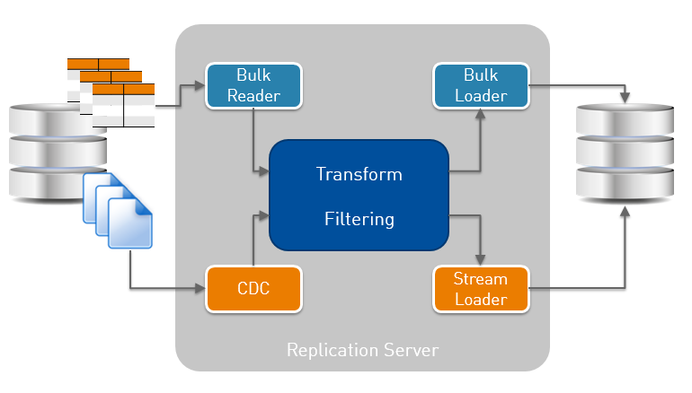
If you follow my blog, you should know that I really like Dbvisit replicate because it’s simple, robust, has good features and excellent support. But that’s not a reason to ignore other alternatives (and this is the reason of https://www.dbi-services.com/news-en/replication-event-2/). When you have heterogeneous sources (not only Oracle) there is Oracle Golden Gate with very powerful possibilities, but maybe not an easy learning curve because of lack of simple GUI and setup wizard. You may need something more simple but still able to connect to heterogeneous sources. In this post, I am testing another logical replication software, Attunity replicate which has a very easy GUI to start and has connectors (called ‘endpoints’) for lot all databases.
I’m trying the free trial version, installed on my laptop (Windows 10) and accessed through web browser. Here is how the Attunity Replicate architecture looks like:
Bulk reader/loader are for initialization, CDC is the redo mining process and Stream Loader the one that applies to destination. Those are connectors to RDBMS (and other source/destinations). A common engine does the filtering and transformation.
I define a new replication task where my goal is to replicate one simple table, EMP2, a copy of SCOTT.EMP: 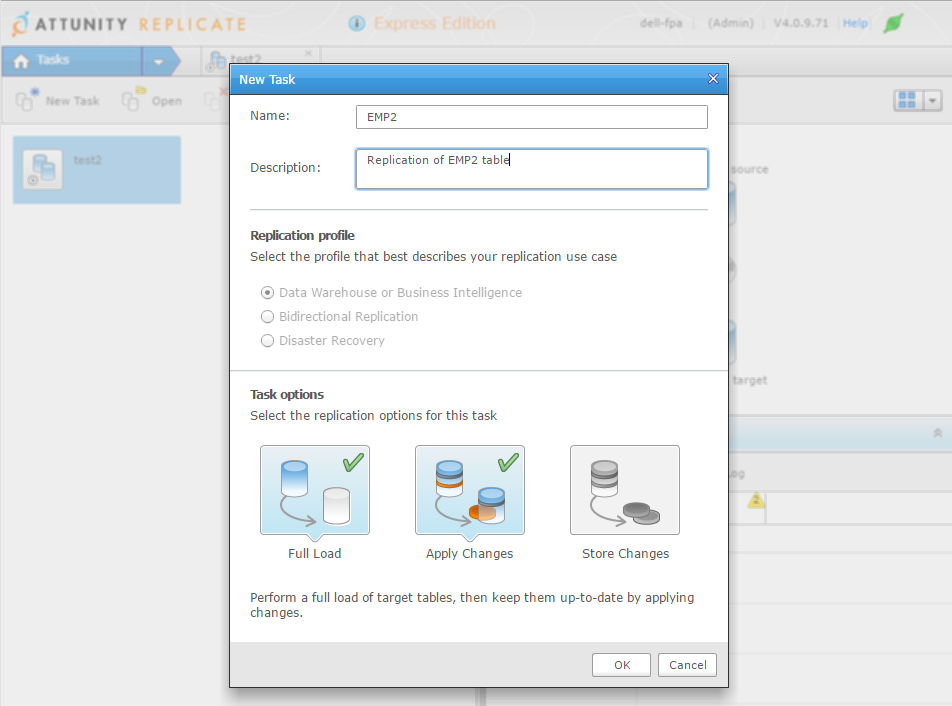
This task will do the first initialization and run real-time replication.
I need to define the databases. Interestingly, there is nothing to install on source and destination. The replication server connects only through SQL*Net: 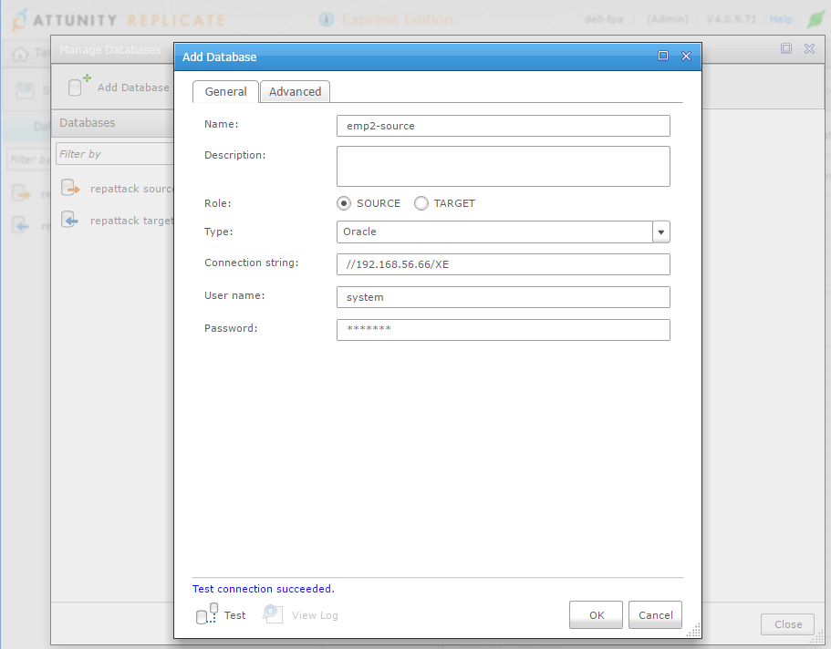
I use SYSTEM here for simplicity. You need a user that can access some system tables and views, be able to create a directory,read files, etc.
That’s probably defined in the documentation, but I like to do my first trial just by exploring. In case you missed one, don’t worry, the ‘test’ button will check for everything. Here is an example when you try to use SCOTT: 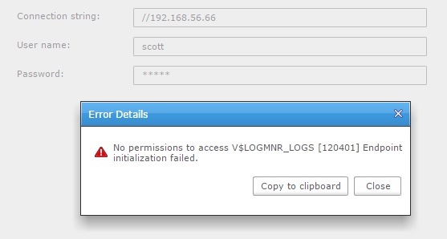
V$LOGMNR_LOGS… That’s interesting. LogMiner may not be the most efficient, and may not support all datatypes, but it’s the only Oracle supported way to read redo logs.
Advanced tab is very interesting about it as it shows that there are two possibilities to mine Oracle redo stream: use LogMiner or read binary files (archived + online from source, or only archived logs shipped to another location). It supports ASM (and RAC) and it supports encryption (TDE). 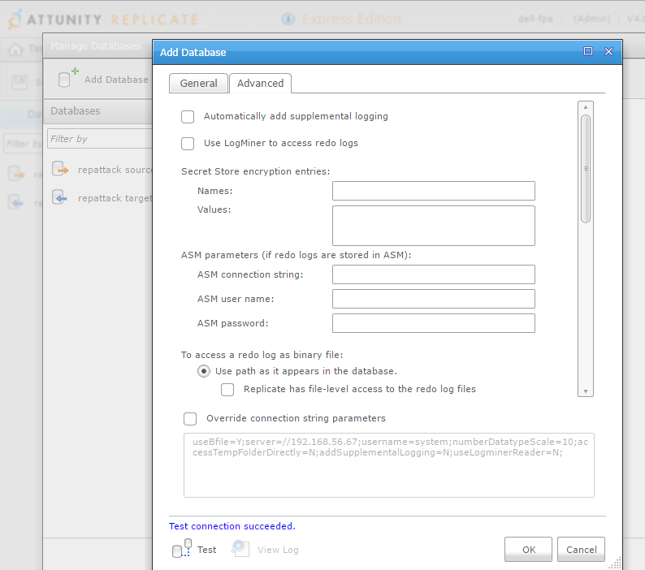
I’ve unchecked ‘automatically add supplemental logging’ here because it’s something I want to do manually because it requires an exclusive lock on the source tables. You can let it do automatically if you have no application running on the source when you will start, but that’s probably not the case. Doing it manually let me do this preparation off business hours.
The problem is that you have then to run it for all the tables:
Something is missing here for me: I would like to run the DDL manually, but have the script generated automatically.
Direct-path insert is something that we want for the bulk load, except if we have tables or indexes that do not support OCI direct-path inserts. Then it will use conventional array insert. But it seems that this setting is per-task and not per-table. 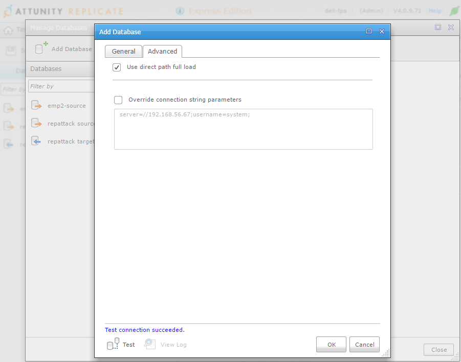
I’ve selected my table with the ‘Table Selection’ wizard: 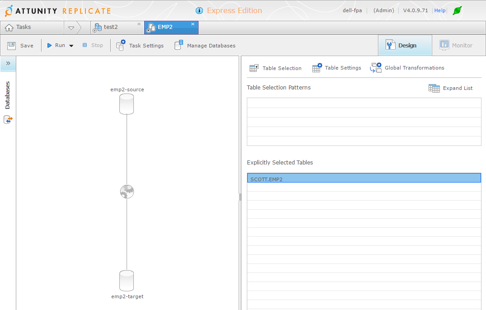
With ‘Table Settings’ you can customize columns, filter rows: 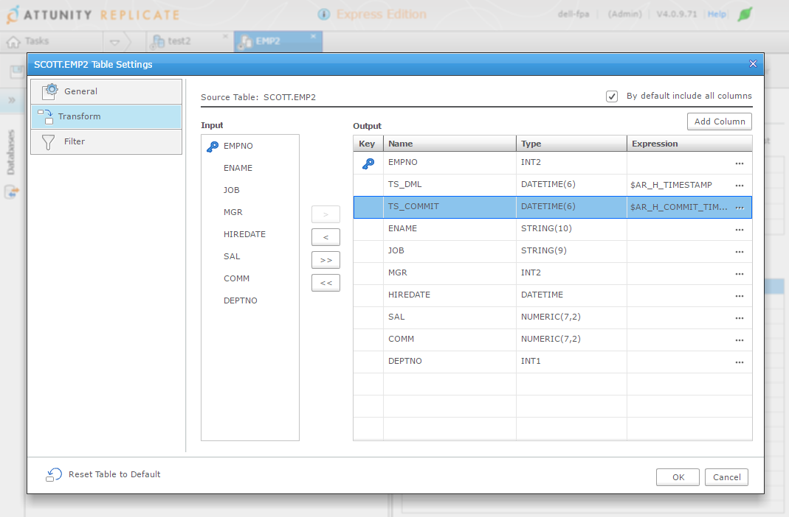
With ‘Global Transformation’ you can add rules to transform tables or columns that follow a pattern.
There is a ‘Run’ button that will bulk load the tables and start real-time replication, but let’s look at the ‘advanced’ options: 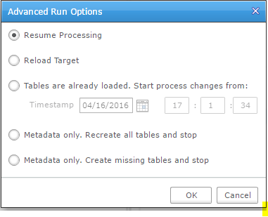
You can managed the initial load yourself, which is good (for example to initialize with a RMAN duplicate or an activated standby) but I would like to set an SCN there instead of a timestamp.
Ability to reload is good, but that’s something we may want to do not for all tables but, for example, for one table that we reorganized at the source.
Those are the cases where simple GUI wizard have their limits. It’s good to start but you may quickly have to do things a little more complex.
If I click on the simple run button, everything is smooth: it will do the initial load and then run replication.
I started a transaction on my table that I’ve not commited yet:
03:15:50 SQL> update emp2 set sal=sal+100;
14 rows updated.
And the behaviour looks ok: wait the end of current transactions: 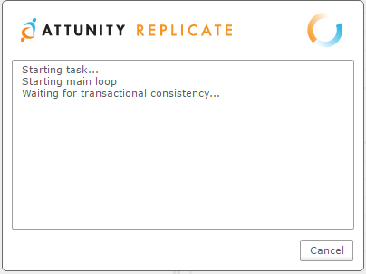
My good surprise is that there is no lock waits, which would have blocked DML activity.
From trace files (yes this is my first trial and I’ve already set trace for all session coming from repctl.exe and anyway, I cannot post a blog with only screenshots…) it reads V$TRANSACTION every few seconds:
=====================
PARSING IN CURSOR #140631075113120 len=49 dep=0 uid=5 oct=3 lid=5 tim=1460820357503567 hv=3003898522 ad='86236a30' sqlid='6ffgmn2thrqnu'
SELECT XIDUSN, XIDSLOT, XIDSQN FROM V$TRANSACTION
END OF STMT
PARSE #140631075113120:c=3999,e=4414,p=0,cr=2,cu=0,mis=1,r=0,dep=0,og=1,plh=3305425530,tim=1460820357503547
EXEC #140631075113120:c=0,e=62,p=0,cr=0,cu=0,mis=0,r=0,dep=0,og=1,plh=3305425530,tim=1460820357503922
WAIT #140631075113120: nam='SQL*Net message to client' ela= 22 driver id=1413697536 #bytes=1 p3=0 obj#=-1 tim=1460820357504052
FETCH #140631075113120:c=0,e=392,p=0,cr=0,cu=2,mis=0,r=2,dep=0,og=1,plh=3305425530,tim=1460820357504540
WAIT #140631075113120: nam='SQL*Net message from client' ela= 1033 driver id=1413697536 #bytes=1 p3=0 obj#=-1 tim=1460820357505766
...
*** 2016-04-17 03:26:52.265
WAIT #140631074940472: nam='SQL*Net message from client' ela= 5216008 driver id=1413697536 #bytes=1 p3=0 obj#=-1 tim=1460820412265018
EXEC #140631074940472:c=0,e=25,p=0,cr=0,cu=0,mis=0,r=0,dep=0,og=1,plh=735420252,tim=1460820412265099
WAIT #140631074940472: nam='control file sequential read' ela= 8 file#=0 block#=1 blocks=1 obj#=-1 tim=1460820412265137
WAIT #140631074940472: nam='control file sequential read' ela= 3 file#=0 block#=16 blocks=1 obj#=-1 tim=1460820412265152
WAIT #140631074940472: nam='control file sequential read' ela= 3 file#=0 block#=18 blocks=1 obj#=-1 tim=1460820412265163
WAIT #140631074940472: nam='control file sequential read' ela= 3 file#=0 block#=1 blocks=1 obj#=-1 tim=1460820412265205
WAIT #140631074940472: nam='control file sequential read' ela= 2 file#=0 block#=16 blocks=1 obj#=-1 tim=1460820412265215
WAIT #140631074940472: nam='control file sequential read' ela= 3 file#=0 block#=18 blocks=1 obj#=-1 tim=1460820412265225
WAIT #140631074940472: nam='control file sequential read' ela= 3 file#=0 block#=281 blocks=1 obj#=-1 tim=1460820412265235
WAIT #140631074940472: nam='SQL*Net message to client' ela= 2 driver id=1413697536 #bytes=1 p3=0 obj#=-1 tim=1460820412265257
FETCH #140631074940472:c=0,e=168,p=0,cr=0,cu=0,mis=0,r=1,dep=0,og=1,plh=735420252,tim=1460820412265278
*** 2016-04-17 03:26:57.498
WAIT #140631074940472: nam='SQL*Net message from client' ela= 5233510 driver id=1413697536 #bytes=1 p3=0 obj#=-1 tim=1460820417498816
EXEC #140631074940472:c=0,e=125,p=0,cr=0,cu=0,mis=0,r=0,dep=0,og=1,plh=735420252,tim=1460820417499357
WAIT #140631074940472: nam='control file sequential read' ela= 42 file#=0 block#=1 blocks=1 obj#=-1 tim=1460820417499592
WAIT #140631074940472: nam='control file sequential read' ela= 26 file#=0 block#=16 blocks=1 obj#=-1 tim=1460820417499819
WAIT #140631074940472: nam='control file sequential read' ela= 16 file#=0 block#=18 blocks=1 obj#=-1 tim=1460820417499890
WAIT #140631074940472: nam='control file sequential read' ela= 14 file#=0 block#=1 blocks=1 obj#=-1 tim=1460820417500081
WAIT #140631074940472: nam='control file sequential read' ela= 17 file#=0 block#=16 blocks=1 obj#=-1 tim=1460820417500177
WAIT #140631074940472: nam='control file sequential read' ela= 11 file#=0 block#=18 blocks=1 obj#=-1 tim=1460820417500237
WAIT #140631074940472: nam='control file sequential read' ela= 47 file#=0 block#=281 blocks=1 obj#=-1 tim=1460820417500324
WAIT #140631074940472: nam='SQL*Net message to client' ela= 7 driver id=1413697536 #bytes=1 p3=0 obj#=-1 tim=1460820417500470
FETCH #140631074940472:c=2000,e=1109,p=0,cr=0,cu=0,mis=0,r=1,dep=0,og=1,plh=735420252,tim=1460820417500550
So it seems that it waits for a point where there is no current transaction, which is the right thing to do because it cannot replicate transactions that start before redo mining.
However, be careful, there is a ‘transaction consistency timeout’ that defaults to 10 minutes and it seems that the load just starts after this ‘timeout’. The risk is that if those transactions finally change the tables you replicate, you will get a lot of replication conflicts.
So I commit my transaction and the bulk load starts.
03:15:45 SQL> commit;
Here is what we can see from the trace:
PARSING IN CURSOR #139886395075952 len=206 dep=0 uid=5 oct=3 lid=5 tim=1460819745436746 hv=3641549327 ad='8624b838' sqlid='g2vhbszchv8hg'
select directory_name from all_directories where directory_path = '/u01/app/oracle/fast_recovery_area/XE/onlinelog' and (directory_name = 'ATTUREP_27C9EEFCEMP2' or 'ATTUREP_' != substr(directory_name,1,8) )
END OF STMT
This is a clue that Attunity Replicate creates a directory object (It’s actually created in SYS and I would prefer to be informed of that kind of things…)
And here is how redo is read – through SQL*Net:
WAIT #0: nam='BFILE get length' ela= 18 =0 =0 =0 obj#=-1 tim=1460819745437732
LOBGETLEN: c=0,e=84,p=0,cr=0,cu=0,tim=1460819745437768
WAIT #0: nam='SQL*Net message to client' ela= 3 driver id=1413697536 #bytes=1 p3=0 obj#=-1 tim=1460819745437787
WAIT #0: nam='SQL*Net message from client' ela= 225 driver id=1413697536 #bytes=1 p3=0 obj#=-1 tim=1460819745438025
WAIT #0: nam='BFILE open' ela= 53 =0 =0 =0 obj#=-1 tim=1460819745438113
LOBFILOPN: c=0,e=78,p=0,cr=0,cu=0,tim=1460819745438125
WAIT #0: nam='SQL*Net message to client' ela= 2 driver id=1413697536 #bytes=1 p3=0 obj#=-1 tim=1460819745438137
WAIT #0: nam='SQL*Net message from client' ela= 196 driver id=1413697536 #bytes=1 p3=0 obj#=-1 tim=1460819745438341
WAIT #0: nam='BFILE internal seek' ela= 15 =0 =0 =0 obj#=-1 tim=1460819745438379
WAIT #0: nam='BFILE read' ela= 13 =0 =0 =0 obj#=-1 tim=1460819745438401
WAIT #0: nam='SQL*Net message to client' ela= 2 driver id=1413697536 #bytes=1 p3=0 obj#=-1 tim=1460819745438410
LOBREAD: c=0,e=56,p=0,cr=0,cu=0,tim=1460819745438416
WAIT #0: nam='SQL*Net message from client' ela= 208 driver id=1413697536 #bytes=1 p3=0 obj#=-1 tim=1460819745438636
WAIT #0: nam='BFILE internal seek' ela= 4 =0 =0 =0 obj#=-1 tim=1460819745438672
WAIT #0: nam='BFILE read' ela= 14 =0 =0 =0 obj#=-1 tim=1460819745438695
WAIT #0: nam='SQL*Net message to client' ela= 1 driver id=1413697536 #bytes=1 p3=0 obj#=-1 tim=1460819745438706
LOBREAD: c=0,e=48,p=0,cr=0,cu=0,tim=1460819745438713
WAIT #0: nam='SQL*Net message from client' ela= 361 driver id=1413697536 #bytes=1 p3=0 obj#=-1 tim=1460819745439086
WAIT #0: nam='BFILE internal seek' ela= 4 =0 =0 =0 obj#=-1 tim=1460819745439124
WAIT #0: nam='BFILE read' ela= 4 =0 =0 =0 obj#=-1 tim=1460819745439135
WAIT #0: nam='SQL*Net message to client' ela= 2 driver id=1413697536 #bytes=1 p3=0 obj#=-1 tim=1460819745439144
WAIT #0: nam='BFILE internal seek' ela= 2 =0 =0 =0 obj#=-1 tim=1460819745439156
WAIT #0: nam='BFILE read' ela= 2 =0 =0 =0 obj#=-1 tim=1460819745439167
WAIT #0: nam='BFILE internal seek' ela= 2 =0 =0 =0 obj#=-1 tim=1460819745439178
WAIT #0: nam='BFILE read' ela= 2 =0 =0 =0 obj#=-1 tim=1460819745439188
So it probably reads the redo through utl_file and transfer it as a BLOB. This is good for simplicity when we want to install nothing on the source, but on the other hand, this means that filtering cannot be done upstream.
The GUI show the overall monitoring. Here are my transactions that are captured and buffered until they are commited: 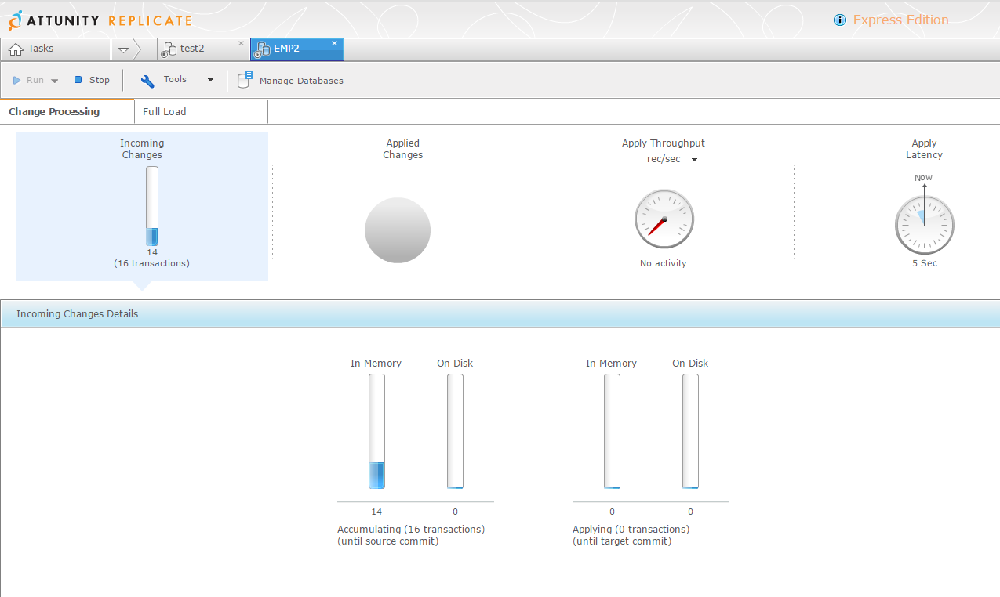
and once they are commited they are applied: 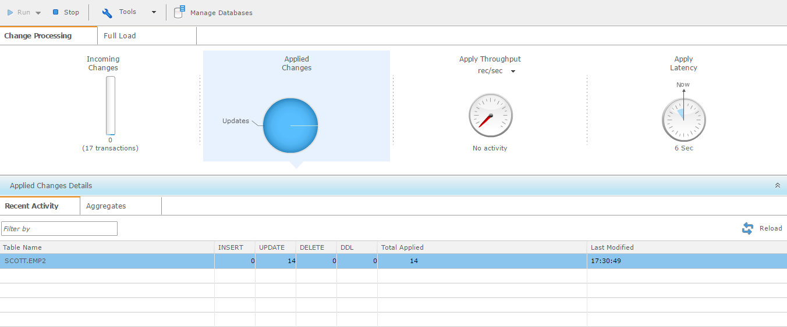
I did some DML to create some replication conflict, which is something we have to deal with logical replication (because of constraints, triggers, 2-way replication, etc) and the default management is a bit loose in my opinion: log it and continue: 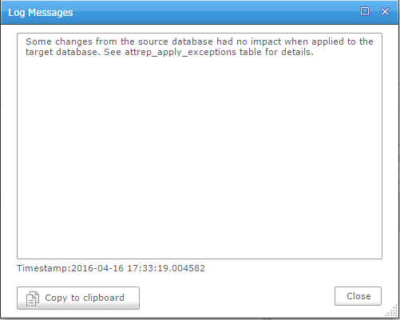
Ignoring a problem and continuing makes the target unreliable until the issue is manually solved.
This behavior can be customizable for the whole replication task. This is the default: 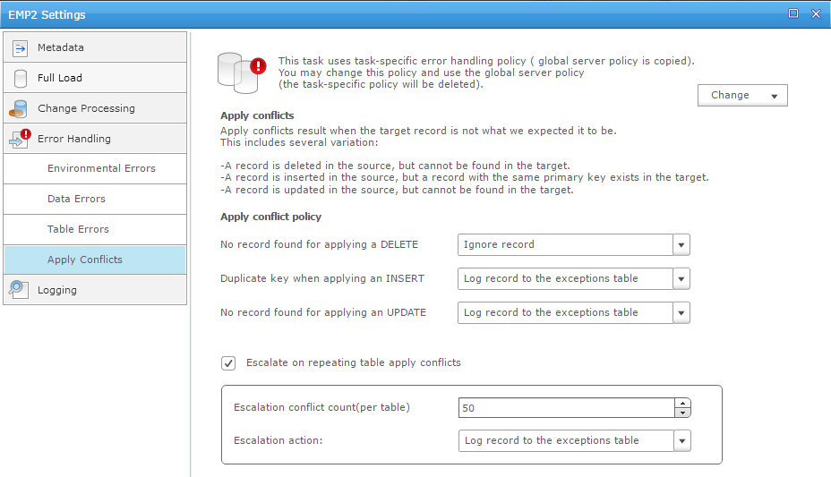
but we can customize it: either evict a table from the replication or stop the whole replication.
I prefer the latest because only the latest keeps full consistency on target. But then we have to be sure that no conflicts exists, or are resolved automatically.
I’ve not seen a table-level way to define automatic conflict resolution. I real life, it’s better to stop whenever any unexpected situation occurs (i.e when one redo record do not change exactly one row) but we may have to accept specific settings for few tables where the situation is expected (because of triggers, cascade constraints, etc).
Attunity Replicate buffers the transactions and apply them when commit is encountered, which is better in case of many rollbacks, but may lead to a replication gap in case of long transactions.
From the traces I’ve seen, the dictionary information is read from the source database each time it is needed. This is probably higher overhead on source when compared with solutions that get dictionary changes from the redo stream. And this probably raise more limitation on DDL (replication is not possible on changes occurring after ADD, DROP, EXCHANGE and TRUNCATE partition are not ).
Attunity GUI is very nice for simple setups and for graphical monitoring, and I understand why it is well known in SQL Server area for this reason.
The number of supported databases (or rather ‘endpoints’ because it goes beyond databases) is huge:
There are several logical replication solutions, with different prices, different design, different philosophy. I always recommend a Proof of Concept in order to see which one fits your context. Test everything: the setup and configuration alternatives, the mining of production workload, with DDL, special datatypes, high redo rate, etc. Don’t give up on first issue, it’s also a good way to consider documentation quality and support efficiency. And think about all the cases where you will need it: real-time BI, auditing, load balancing, offloading, migrations, data movement to and from the Cloud.
{kind=link}
{kind=link}
{kind=link}
{kind=link}
{kind=link}
{kind=link}
{kind=link}
{kind=link}
{kind=link}
{kind=link}
{kind=link}
{kind=link}
{kind=link}
{kind=link}
{kind=link}
{kind=link}
{kind=link}